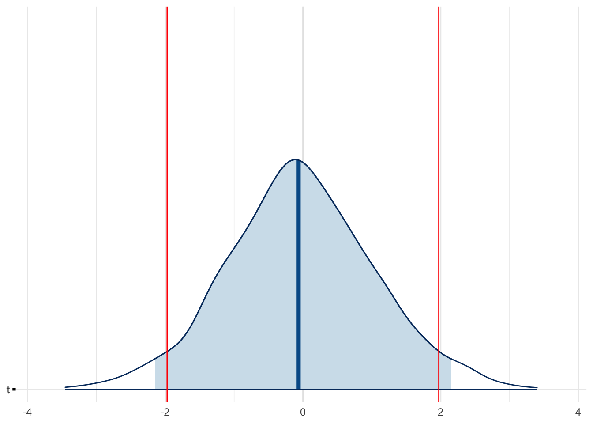

library(tidyverse)
library(ggformula)
library(mosaic)
library(rstanarm)
library(posterior)
library(bayesplot)
theme_set(theme_minimal())
set.seed(666)One test to rule them all
Setup environment
Simulate data
N <- 10
M <- 1000
# Simulate two groups
d <-
tibble(A = rnorm(N, mean = 50, sd = 10),
B = rnorm(N, mean = 60, sd = 10)) |>
pivot_longer(cols = everything(),
names_to = "X",
values_to = "Y") |>
arrange(X)
d| X | Y |
|---|---|
| A | 57.53 |
| A | 70.14 |
| A | 46.45 |
| A | 70.28 |
| A | 27.83 |
| A | 57.58 |
| A | 36.94 |
| A | 41.97 |
| A | 32.08 |
| A | 49.58 |
| B | 81.50 |
| B | 42.30 |
| B | 68.65 |
| B | 42.80 |
| B | 61.34 |
| B | 59.24 |
| B | 68.58 |
| B | 63.45 |
| B | 54.18 |
| B | 67.86 |
# Calculate observed difference in means
obs_diff <- diff(mean(Y ~ X, data = d))
obs_diff B
11.95 # Show t-test p-value for reference
t.test(Y ~ X, data = d, var.equal = TRUE)$p.value[1] 0.06409Parametric bootstrapping of estimator under the null
# Estimate null distribution parameters
pooled_mean <- mean(d$Y)
pooled_sd <- sd(d$Y) # Assumes equal variance# Simulate null distribution: assume no difference
parm <- do(M) * {
A <- rnorm(N, mean = pooled_mean, sd = pooled_sd)
B <- rnorm(N, mean = pooled_mean, sd = pooled_sd)
diff = mean(A) - mean(B)
tibble(diff)
}# Calculate p-value as the proportion of simulated diffs as extreme as observed
parm |> summarize(p.value = mean(abs(diff) >= abs(obs_diff))) |> pull(p.value)[1] 0.062mcmc_areas(parm, prob = 0.95) |>
gf_vline(xintercept = ~ obs_diff, color = "red") |>
gf_vline(xintercept = ~ -obs_diff, color = "red")Non-parametric permutation testing
# Run permutation test
perm <- do(M) * list(diff = diff(mean(Y ~ shuffle(X), data = d)))# Compute two-sided p-value
perm |> summarize(p.value = mean(abs(diff) >= abs(obs_diff))) |> pull(p.value)[1] 0.067mcmc_areas(perm, prob = 0.95) |>
gf_vline(xintercept = ~ obs_diff, color = "red") |>
gf_vline(xintercept = ~ -obs_diff, color = "red")This test does not assume normality or equal variances like the parametric one does.
It assumes the labels (group assignments) are exchangeable under the null hypothesis (i.e., no effect of group).
You could extend this easily to other test statistics, such as differences in medians, or even t-statistics.
# Compute observed t-statistic (Welch’s)
obs_t <- t.test(Y ~ X, data = d, var.equal = TRUE)$statistic
# Permutation test using t-statistic
perm_t <- do(M) * t.test(Y ~ shuffle(X), data = d, var.equal = TRUE)$statistic# Two-sided permutation p-value
perm_t |> summarize(p.value = mean(abs(t) >= abs(obs_t))) |> pull(p.value)[1] 0.071mcmc_areas(perm_t, prob = 0.95) |>
gf_vline(xintercept = ~ obs_t, color = "red") |>
gf_vline(xintercept = ~ -obs_t, color = "red")
| Approach | Assumes Normality | Assumes Equal Variance | Null Distribution Source | Test Statistic | Flexibility / Robustness | P-value Computation |
|---|---|---|---|---|---|---|
| Classical t-test | Yes | Yes (Student’s t) | Theoretical t-distribution | t-statistic | Low (sensitive to assumptions) | Analytical from t-distribution |
| Parametric Simulation | Yes | Yes (via sd) | Simulated from rnorm() under H₀ |
Difference in means | Moderate (assumes model) | Proportion of extreme simulated diffs |
| Permutation Test (Diff in Means) | No | No | Empirical from permuted label diffs | Difference in means | High (non-parametric) | Proportion of extreme permuted diffs |
| Permutation Test (t-statistic) | No | No | Empirical from permuted label t-stats | t-statistic | High (non-parametric) | Proportion of extreme permuted t-stats |
Non-parametric resampling methods like non-parametric bootstrapping and permutation testing are extremely flexible and powerful, but they do have limitations — particularly when compared to well-specified parametric methods. Here’s a summary of when and why resampling methods start to lose ground:
The sample is too small (n < 10) or unrepresentative
Data are not i.i.d. (time series, clustered/longitudinal data, multilevel/hierarchical data)
Data are high-dimensional (violate exchangeability for permutation)
Inference tasks are complex or causal
Parametric assumptions are justified (the true data-generating process is known or well-approximated), in which case parametric methods yield more efficient and exact estimates
In basic contexts (e.g. estimating the mean or median), nonparametric bootstrapping (resampling the data with replacement) doesn’t rely on distributional assumptions — you’re letting the data “speak for themselves” by treating your sample as a stand-in for the population/distribution. However, the moment you bootstrap model-based test statistics or estimates, you implicitly or explicitly rely on the model structure/assumptions.
| Total Sample Size | Bootstrap Usefulness |
|---|---|
| \(n < 10\) | ❌ Very limited utility |
| \(10 \leq n < 30\) | ⚠️ Use with caution; sensitive to outliers |
| \(n \geq 30\) | ✅ Reasonably stable |
| \(n \gg 100\) | ✅ Very stable, less needed |
“Poor man’s posterior”: Non-parametric bootstrapping of estimator
The “poor man’s posterior” is a nickname for the bootstrap distribution of an estimator obtained by resampling the observed data with replacement. This distribution is treated as a proxy for the posterior distribution of the parameter under non-informative prior.
The “poor man’s posterior” is philosophically Bayesian-like, but technically frequentist, and lacks the full apparatus of Bayesian modeling (e.g., prior specification, model-based posterior inference).
# Poor man's posterior
boot_df <- do(M) * list(boot_diff = diff(mean(Y ~ X, data = resample(d, groups = X))))# Bayesian posterior
bayes_df <-
stan_glm(
Y ~ X,
data = d,
prior = NULL,
prior_intercept = NULL,
chains = 2,
iter = M,
seed = 666
) |>
as_draws_df() |>
select(XB) |>
rename(bayes_diff = XB)df <- bind_cols(bayes_df, boot_df)
summarise_draws(df)| variable | mean | median | sd | mad | q5 | q95 | rhat | ess_bulk | ess_tail |
|---|---|---|---|---|---|---|---|---|---|
| bayes_diff | 11.83 | 11.94 | 5.857 | 5.787 | 2.733 | 21.42 | 1.0014 | 946.0 | 807.9 |
| boot_diff | 11.74 | 11.76 | 5.915 | 5.763 | 1.873 | 21.31 | 0.9991 | 893.3 | 892.4 |
mcmc_areas(df, prob = 0.95)In this sense, the bootstrap distribution represents an (approximate) nonparametric, noninformative posterior distribution for our parameter. But this bootstrap distribution is obtained painlessly — without having to formally specify a prior and without having to sample from the posterior distribution. Hence we might think of the bootstrap distribution as a “poor man’s” Bayes posterior. By perturbing the data, the bootstrap approximates the Bayesian effect of perturbing the parameters, and is typically much simpler to carry out.
Hastie, Tibshirani, and Friedman (2009)
References
Hastie, Trevor, Robert Tibshirani, and Jerome Friedman. 2009. The Elements of Statistical Learning. Springer New York. https://doi.org/10.1007/978-0-387-84858-7.